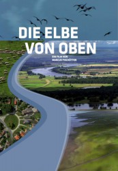

")
Alternativ: Die Elbe von oben (Englischer Titel)
 
 IMDB-Wertung: 7.3 / 10
IMDB-Wertung: 7.3 / 10  Metascore:
Metascore: 
Die Elbe von oben - Einzigartige Natur, glanzvolle Geschichte! Vom Riesengebirge bis zur Altmark - Von Schnackenburg bis Cuxhaven. Ein Strom majestätisch und unaufhaltsam. Eine der letzten natürlichen Flußlandschaften Europas. Einzigartige Naturräume säumen ihre Ufer und glanzvolle Städte. Schauplatz großer Geschichte und Kulisse vieler Geschichten. Erleben Sie den Fluß, deren Landschaften und die Menschen, die an und mit der Elbe leben. Mit atemberaubenden Bildern aus einer ganz besonderen Perspektive. Natur, Geschichte und faszinierende Luftaufnahmen.
Jahr: 2013
Dauer: 43 Minuten
FSK:
Land: Deutschland Studio: imFilm - Agentur VerleihTonspuren:
Untertitel:
Auflösung: 1080p (1920x1080) Größe: 2785 MB
Genre: Dokumentation, TV-Serie
Regisseur: Markus Fischötter
Drehbuch: Markus Fischötter
Soundtrack: Clemens Winterhalter
Darsteller:
Datei: X:\Dokumentationen\Von Oben\Elbe von oben\1 Von Schnackenburg bis Hamburg.mkv seit 31.08.2019
Festplatte: HD Serien(SU-Z)+Dokus+Musik
 Es gibt insgesamt 14 Filme in der Gruppe 'Dokumentationen\Von Oben'
Es gibt insgesamt 14 Filme in der Gruppe 'Dokumentationen\Von Oben'